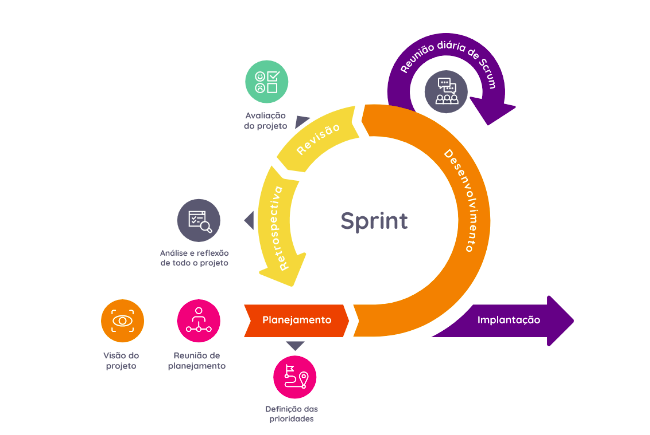

Visão do Produto e Projeto
Histórico de Versão
| Data | Versão | Descrição | Autor(es) |
|---|---|---|---|
| 23/06/2022 | 0.1 | Criação do documento | Pedro Helias |
| 25/06/2022 | 0.2 | Visão geral do projeto | Gabriel Marcolino e Rhuan Marques |
| 28/06/2022 | 0.3 | Visão geral do produto | Pedro Helias e Jefferson |
| 28/06/2022 | 0.4 | Processo de engenharia de requisitos | Gabriel Marcolino, Pedro Helias e Rhuan Marques |
| 29/06/2022 | 0.5 | Tecnologias Utilizadas, Processo de desenvolvimento de software | Matheus, José, Renan, Shaíne |
| 29/06/2022 | 0.6 | Processo de desenvolvimento de software | Matheus, José, Renan, Shaíne |
| 03/07/2022 | 1.0 | Correções do documento - Requisitos | Pedro e Gabriel |
| 17/07/2022 | 1.1 | Atualização do processo de engenharia de requisitos e planejamento das fases | Gabriel Marcolino e Jefferson |
| 18/07/2022 | 1.2 | Correções do documento - MDS | Matheus, Shaíne e José |
| 19/07/2022 | 1.2 | Correções do produto - Requisitos | Pedro Helias |
| 28/07/2022 | 1.3 | Atualização do processo de engenharia de requisitos | Gabriel Marcolino e Pedro Helias |
| 01/08/2022 | 1.4 | Atualização do processo de desenvolvimento e planejamento de fases | Gabriel Marcolino, Pedro Helias, Matheus, Shaíne |
Sumário
1. Visão Geral do Produto
A Pets Off Road é uma organização fundamentada e gerida em grupos de Whatsapp que visa, principalmente, auxiliar animais desamparados, que estão em situação de rua, sofrem maus tratos ou foram abandonados. A organização deixa claro que não é um abrigo para animais, mas sim uma causa composta por colaboradores que conseguem auxiliar o projeto da forma como podem, seja carona, lar temporário, entre outros. Cada colaborador se estabelece em um grupo o qual consegue auxiliar no projeto relacionado. É citado os grupos de Castração de animais de Rua, Auxílio a Zoonose do Valparaíso, Projeto de Resgate, o que sempre está precisando de novos colaboradores e mais recentemente o Grupo Teen que trabalha na construção de casinhas para animais de rua. A Pets Off Road possui páginas em redes sociais, onde muito dos trabalhos de comunicação são realizados, além de ser uma ponte entre quem pode ajudar e o projeto.
-
O produto proposto se trata de uma solução WEB (um website) que formará uma rede social entre diferentes organizações/projetos voltados para a causa dos animais abandonados ou vítimas de maus tratos, com o intuito de encaminha-los para possíveis tutores, realizar essa "ponte" entre pessoas que gostariam de adotar e animais precisando de tutores; medica-los, e/ou promover castrações para quem não pode arcar com os custos. Como uma rede social, opções de interação como criação de postagens para informar e interagir com usuários com baixos privilégios(usuário comum) e contatos com as organizações serão possíveis. Acreditamos que esse produto terá maior praticidade sobre o que já é utilizado por muitos desses projetos. Como primeiro cliente, o projeto foi construído utilizando o escopo de alguns serviços que a Pets Off Road presta atualmente. Por conta disso, foi modelado um sistema que visa criar uma estrutura mais robusta e virtualizada de alguns serviços da Pets Off Road, ou seja, evoluir os meios de gerência e acessibilidade para os projetos, de forma a adaptar o que já é feito atualmente, seja com cadastros virtuais, listagem de componentes, até a criação de uma “ponte” entre a Pets Off Road e outras organizações, e o usuário/colaborador.
-
O produto possui origem acadêmica voltado a uma causa admirável, além de que se busca propor uma solução baseada no que já se configura na questão de gerência e fluxo de serviço. Em outras palavras, busca-se respeitar o que já existe e adaptar em uma solução mais dinâmica e robusta.
-
Os usuários alvo são: Pessoas dispostas a adotar animais, realizar doações(remédio, pix) e/ou colaborar com a Pets Off Road e outras organizações. O cliente é a criadora da Pets Off Road e possíveis outras organizações.
-
Atualmente, as operações realizadas são feitas via Instagram. A princípio, apenas essa plataforma consegue suprir o alcance do projeto, porém não supre as necessidades gerenciais e de controle. A cliente relata que possui bastante dificuldade para controlar e filtrar candidatos a voluntariado e/ou tutores de animais, além de que a gestão de dados também não é simplificada. Portanto, o produto visa a resolução dessas problemáticas expostas.
1.1. Declaração de Posição do Produto
| Para | Usuários em comum |
|---|---|
| Quem | Deseja realizar doações, adoção de animais e/ou voluntariado |
| Nome a decidir | É um projeto em vias de migração para um Website que manifesta uma rede social |
| Que | Disponibiliza informações para doações, formulários de cadastro para voluntários/tutores, histórico de cuidado com o animal, entre outros |
| Ao Contrário | De procurar por informação em diversos posts da página oficial do projeto no Instagram, onde o cliente fica à mercê da orgarnização do APP |
| Nosso produto | Condensará boa parte das atividades e informações que não estão presentes ou acessíveis no Instagram, ou são improváveis de serem executadas por lá, como gerência de informação, gestão e filtragem de voluntários, entre outros |
1.2. Objetivos do Produto
O principal objetivo é facilitar algumas tarefas realizadas pela organização, Pets Off Road, no dia-a-dia, já que normalmente todas as tarefas são feitas através do whatsapp e Instagram, redes sociais não muito adequadas para as resoluções dos serviços realizados.
Para ajudar na administração e gerenciamento das tarefas criaremos um website. Nele será possível que qualquer pessoa possa realizar seu cadastro, se tornar um voluntário e escolher quais grupos irá fazer parte, deixaremos disponíveis dados da organização para que doações possam ser feitas. Também será possível detalhar os eventos das Organizações cadastradas por meio de postagens. E para a cliente, um backgroud onde será possível gerenciar e filtrar cadastros realizados por terceiros, além de um pequeno controle de finanças com possibilidades de adição de entrada e saída de capital.
1.3. Tecnologias a Serem Utilizadas
Os desenvolvedores da Pets Off Road decidiram usar algumas tecnologias que já estão familiarizados, consequentemente, o tempo que terão para se dedicarem a escalada do projeto será maior. São elas:
| Frontend | Backend | Teste | Prototipação | Comunicação | Organizacional |
|---|---|---|---|---|---|
| ReactJs (JavaScript Libary) | NodeJS | Jest | Figma | Discord | Github |
| TypeScript | MySQL | Meet | Miro | ||
| Styled-Components | TypeScript |


2. Visão Geral do Projeto
2.1. Organização do Projeto
| Papel | Atribuições | Responsável | Participantes |
|---|---|---|---|
| Desenvolvedor | Codificar o produto, codificar testes unitários, realizar refatoração | Renan Rodrigues e Matheus Phillipo | Renan Rodrigues, Shaine Aparecida, Jose Filipi, Matheus Phillipo |
| Analista de Qualidade | Elaboração e implementação de modelos e ferramentas de controle de qualidade, com foco na adoção de políticas e técnicas de melhoria contínua. | Gabriel Marcolino | Jefferson Franca, Gabriel Marcolino, Rhuan Marques, Pedro Helias |
| Product Owner | Construir, aperfeiçoar e manter o Backlog, assegurar que o mesmo esteja visível, claro e transparente para todos, assim como o objetivo do produto, solicitar a implementação de funcionalidades | Pedro Helias | Jefferson Franca, Gabriel Marcolino, Rhuan Marques, Pedro Helias |
| Scrum Master | Responsável por garantir que os rituais do Scrum sejam seguidos, age como um facilitador das dailys, sprint reviews e sprint planning | Rhuan Marques | Jefferson Franca, Gabriel Marcolino, Rhuan Marques, Pedro Helias |
| Cliente | Administradora do projeto Pets Off Road e responsável por validar os pontos de entrega do projeto | Marcela Carvalho Marques | Marcela Carvalho Marques |
2.2. Planejamento das Fases e/ou Iterações do Projeto
| Sprint | Produto (Entrega) | Data Início | Data Fim |
|---|---|---|---|
| Sprint 1 | Formação da equipe e Definição do Projeto | 20/06/2022 | 26/06/2022 |
| Sprint 2 | Visão do produto e projeto e processo de engenharia de requisitos | 27/06/2022 | 03/07/2022 |
| Sprint 3 | Atualização da visão do produto e projeto | 04/07/2022 | 10/07/2022 |
| Sprint 4 | Levantamento de Requisitos, Canvas MVP, WorkShop(MDS) | 11/07/2022 | 17/07/2022 |
| Sprint 5 | Backlog , Atualização da Visão do Produto e Projeto | 18/07/2022 | 24/07/2022 |
| Sprint 6 | Atualização do documento de visão, Refinamento do Backlog | 25/07/2022 | 30/07/2022 |
| Sprint 7 | Atualização do MVP e documento de visão, classes iniciais do projeto, protótipo de alta fidelidade, documento de arquitetura, PBB | 31/07/2022 | 06/08/2022 |
| Sprint 8 | User Story Mapping, US6, US1, US22 | 07/08/2022 | 13/08/2022 |
| Sprint 9 | MVP1 | 14/08/2022 | 20/08/2022 |
| Sprint 10 | Implementação | 21/08/2022 | 27/08/2022 |
| Sprint 11 | Implementação | 28/08/2022 | 03/09/2022 |
| Sprint 12 | Implementação | 04/09/2022 | 10/09/2022 |
| Sprint 13 | MVP2 | 11/09/2022 | 17/09/2022 |
2.3. Matriz de Comunicação
| Descrição | Área/Envolvidos | Periodicidade | Produtos Gerados |
|---|---|---|---|
| Acompanhamento das Atividades em Andamento | Equipe do Projeto | Semanal | Resumo da reunião |
| Acompanhamento dos Riscos, Compromissos, Ações Pendentes, Indicadores | Equipe de Requisitos | Quinzenal | Resumo da reunião |
| Comunicar Situação do Projeto | Equipe do Projeto, Professor | Semanal | Feedback do projeto |
| Comunicação geral do grupo | Equipe do Projeto | Sempre que necessário | Resumo da reunião |
| Reunião com a cliente | Equipe de Requisitos | Quinzenal | Resumo da reunião e feedback do projeto |
2.4. Gerenciamento de Riscos
Para o gerenciamento de riscos devem ser realizadas tarefas como:
-
Identificar todos os riscos possíveis e detectáveis em cada fase do projeto;
-
Executar as ações para mitigar os riscos que tenham um alto grau de exposição ao risco caso este ocorra na Lista de Riscos do Projeto;
-
Fazer uma revisão da lista dos riscos periodicamente, com o propósito de averiguar uma possível incidência de um risco e ver se há outros riscos ainda não relatados;
-
Em caso de confirmação de um risco previsto, agir no sentido de contingenciá-lo conforme programado;
-
Registrar os riscos no Painel de Controle do Projeto e no Plano do Projeto (Riscos iniciais).
| Risco | Descrição | Probabilidade | Ações de Mitigação |
|---|---|---|---|
| Dificuldade no desenvolvimento do sitema | Falta de experiência da equipe responsável com as tecnologias utilizadas, complexidade da tarefa | Alta | Pareamento com uma pessoa mais experiente e buscar ajuda externa. |
| Algum membro da equipe trancar a disciplina | As atividades da pessoa em questão terão que ser repassadas, dificultando o andamento do projeto e sobrecarga nos membros restantes | Baixa | Replanejamento das atividades e reatribuição para os membros restantes. |
| Baixa produtividade da equipe | Falta de disponibilidade de tempo, membro da equipe adoecer, falta de motivação | Alta | Replanejar as atividade e redistribuí-las para que o andamento do projeto não seja prejudicado. |
| Problema de comunicação da equipe | Má interpretação das atividades, não atuação por efeitos externos(falta de internet, queda de energia, queda de algum meio de comunicação da equipe) | Moderada | Procurar outros meios de comunicação, reatribuir as atividades. |
| Mudança de escopo | A escolha do tema não agrade os membros da equipe ou a proposta seja rejeitada pelo professor | Baixa | Reordenação dos elementos existentes e criação de um novo escopo. |
| A cliente sai ou desiste do projeto | Como a Marcela é a unica cliente e principal responsável pelo projeto isso iria impossibilitar a continuação do projeto | Alto | Mudança do escopo do projeto ou expandir o projeto para que atenda os mesmos problemas de outras organizações/projetos |
| Cliente fica doente | A cliente fica doente dificultando a comunicação e a partifipação dela nas reuniões | Moderado | Replanejar as atividades ou adia-las |
2.5. Critérios de Replanejamento
Com base nos riscos do projeto foram estabelecidos os seguintes critérios de replanejamento:
- Mudança nos requisitos;
- Algum membro da equipe sair;
- Algum membro ficar doente;
- Atrasos no cronograma do projeto;
- Mundança no escopo do projeto.
3. Processo de Desenvolvimento de Software
O ciclo de vida escolhido foi o iterativo e incremental, pois a equipe decidiu por dividir os requisitos e funcionalidades em módulos. Cada um deles é avaliado e classificado com um nível de prioridades. Sendo assim, o time pode planejar etapas com foco nos módulos prioritários.
Ao término de cada etapa, o cliente receberá uma amostra do software com as funcionalidades já criadas, permitindo que os recursos mais importantes sejam testados rapidamente no ambiente de produção. Ou seja, a equipe terá mais meios para coletar dados sobre o uso da aplicação e o que pode ser feito para otimizá-la.
As chances de o cliente ter elevada satisfação também são maiores. Afinal, ele poderá entregar um feedback contínuo sobre os recursos e as suas expectativas. Portanto, a equipe pode criar maior alinhamento com o usuário e as suas demandas.
Com isso, optamos por uma abordagem ágil, utilizando uma metodologia baseada no XP (Planejamento, Design Simples, Testes, Programação em Pares, Integração Contínua e Padronização de Código) e uso do quadro Kanban, pois definimos anteriormente que o escopo de trabalho seria fracionado e cada parte desenvolvida em ciclos. Com etapas mais curtas e entregas mais frequentes, aliviando assim a carga de trabalho e diminuindo os erros através de feedbacks constantes do cliente e do time de requisitos. Tornado-se um ambiente dinâmico e impulsionando a produtividade em relação ao andamento do projeto.
3.1. Processos e Procedimentos
Os ciclos de desenvolvimento serão feitos no ordenamento do quadro abaixo:
| Disciplina | Atividade | Método | Ferramenta | Responsável | Entrega |
|---|---|---|---|---|---|
| Analise/Design | Definir a arquitetura | Design Orientado a função | Figma | MDS | Documento |
| Analise/Design | Prototipação de Baixa Fidelidade | Metáforas e Modelos Conceituais | Figma | Shaíne e Matheus | Protótipo de páginas |
| Construção | Modelagem Banco de Dados | Modelagem de dados | Lucidchart | José Filipi e Renan | Diagrama UML DB |
| Construção | Programação backend | Codificação | VScode | José Filipi, Renan Rodrigues, Shaíne Oliveira | Código |
| Construção | Programação Frontend | Codificação | VScode | Matheus Phillipo e Shaíne Oliveira | Código |
| Teste | Criar cenários de teste para verificar se os critérios de aceitação foram atendidos e corrigir possíveis falhas | Testes unitários | Jest | Renan e Matheus | Testes unitários |
4. Processo de Engenharia de Requisitos
A equipe do projeto decidiu utilizar uma abordagem ágil para a Engenharia de Requisitos(ER), tendo em vista as necessidades do time e do cliente. Em uma abordagem aǵil as atividades específicas da ER não são especificadas/explicitas. Assim, no contexto ágil o responsável pela gerência dos requisitos é o PO. Além disso, a metodogia ágil conta com a criação do backlog do produto, em que será listado todos os requisitos e atividades a serem realizadas. Como o desenvolvimento é dividido em Sprints, os requisitos não terão necessidade de serem detalhados logo no início do projeto, e sim quando forem movidos para o Sprint Backlog.

4.1. Elicitação de Requisitos
A elicitação ocorrerá na reunião de planejamento.
| Atividade | Descrição | Método | Ferramenta | Responsáveis | Entrega |
|---|---|---|---|---|---|
| Elucidar ideias e analisar o problema | Reunião com a equipe de requisitos com o objetivo de retirar a maior quantidade de "funcionalidades" do diagrama de projetos da Pets Off Road | Brainstorm | Miro e Meet | Equipe de requisitos | Possíveis funcionalidades |
| Entender as necessidades do cliente | Reunião com a cliente para validação dos pontos previamente levantados na atividade anterior, e abertura de novos pontos | Brainstorm e Reunião | Miro e Meet | Equipe de requisitos | Necessidades da cliente |
| Definir proposta de Requisitos | Reunião após contato com a cliente, para solidificar a proposta de requisitos apresentada na primeira entrega | Reunião | Meet | Equipe de requisitos | Fechamento da primeiro entrega |
4.2. Análise de Requisitos
A análise de requisitos pode ocorrer em qualquer etapa do projeto, algumas equipes preferem fazer no início da sprint, já outras preferem fazer ao fim da sprint. Nosso time vai realizar a análise ao fim da retrospectiva, pois o conteúdo estara previamente discutido.
| Atividade | Método | Ferramenta | Responsáveis | Entrega |
|---|---|---|---|---|
| Reconhecer o problema | Brainstorm | Meet e Discord | Equipe de requisitos | Método |
| Revisão dos requisitos | Brainstorm | Discord | Equipe de requisitos | Definição dos requisitos |
| Especificação dos requisitos | Reunião | Discord | Equipe de requisitos | Definição dos requisitos |
4.3. Documentação de Requisitos
A documentação de requisitos será no ciclo de reuniões com a equipe.
| Atividade | Método | Ferramenta | Responsáveis | Entrega |
|---|---|---|---|---|
| Definição de Requisitos Funcionais e Não Funcionais | Técnicas de Registro e Organização de Requisitos | Meet e Miro | Equipe de requisitos | Especificação de Requisitos |
4.4. Verificação e Validação de Requisitos
A verificação e validação ocorrerá na review.
| Atividade | Método | Ferramenta | Responsáveis | Entrega |
|---|---|---|---|---|
| Conferir se os requisitos estão corretos | Validação por parte do cliente com a equipe | Meet | Equipe de requisitos e cliente | Integralização de funcionalidades aprovadas |
4.5. Gerenciamento de Requisitos
O gerenciamento de requisitos ocorrerá durante o desenvolvimento.
| Atividade | Método | Ferramenta | Responsáveis | Entrega |
|---|---|---|---|---|
| Acompanhamento e Refinamento do backlog | Reuniões | Meet e Discord | Equipe de requisitos | Detalhamento dos requisitos |
5. Lições Aprendidas
5.1. Unidade 1
5.1.1. MDS
Tivemos inicialmente dificuldades para determinar a melhor abordagem de desenvolvimento de software. Apesar disso, através dos feedbacks fornecido pelo professor e das apresentações adjacentes foi possível compreender diversas temáticas da disciplina relacionadas a unidade 1. Quanto a questão técnica, foi possível aprender sobre a ferramenta Mkdocs para a elaboração do GitPages e mais sobre versionamento de código com Git. Também tivemos dificuldades de comunicação no início por conflitos de horários, mas por termos adotarmos reuniões diárias foi possível manter uma linha de trabalho constante entre todos os integrantes.
5.1.2. Requisitos
Aprendemos que um bom produto requer um contato recorrente com o cliente, além da verificação e manutenabilidade dos requisitos definidos para o projeto. Apesar dos conhecimentos obtidos, a construção do documento de Engenharia de Requisitos foi complexa e necessitou de revisões e reformulações. Também tivemos dificuldade na comunicação pela indisponibilidade de tempo relacionadas ao trabalho, cursos e/ou outras disciplinas, porém resolvido posteriormente.
5.1.3. MDS-Requisitos
O principal problema foi com a comunicação, problema este acertado posteriormente. É complicado alinhar um time em si, que foi requisitos, por conta do tempo, então igual difícil foi alinhar os horários das duas disciplinas. Muitos componentes dos dois times trabalham. Porém, encontramos horários em comum e esse problema foi solucionado.
5.2. Unidade 2
5.2.1. MDS
5.2.2. Requisitos
O principal aprendizado foi a utilização de um Canvas MVP para construção e adaptação de um projeto. Vimos que, após a criação de personas e identificação de suas jornadas, e em seguida detectar as funcionalidades, deixa o projeto mais coerente e voltado para o usuário, já que o mesmo está sendo utilizado como referência para construção do projeto. Isso ajudou a tirar um pouco o projeto da campo das ideias e trazer algo mais realista e possivelmente mais útil ao usuário final. A construção do MVP ajudou também a entender o que deve ser priorizado na construção do sistema.
5.2.3. MDS-Requisitos
Como um bom aprendizado para o time está na melhor organização e elaboração das Issues, e foi possível verificar crescimento nesse planejamento, dado o fato que os prazos foram cumpridos. Em comparação a Unidade 1, temos bem mais contato e a comunicação está melhorada. Ansiosos para inicar a fase de desenvolvimento, agora que os Requisitos foram especificados e ocorreram workshops para melhor desenvolvimento das skills técnicas do time.
5.3. Unidade 3
5.3.1. MDS
5.3.2. Requisitos
5.3.3. MDS-Requisitos
5.4. Unidade 4
5.4.1. MDS
5.4.2. Requisitos
5.4.3. MDS-Requisitos
6. Referências Bibliográficas
- Sommerville, I., Engenharia de software. 9th ed., Pearson Addison Wesley, 2011
- Silveira, Bárbara; Werneck, Marcelo. A Engenharia de Requisitos nos métodos ágeis: uma revisão sistemática da literatura. 2017
- Ciclos de Vida do Software. Disponível em: https://www.devmedia.com.br/ciclos-de-vida-do-software/21099 Acesso em 29 jun. 2022
- Alves, Lucas; Metodologia Scrum: entenda as etapas e funções dentro da gestão de projetos ágeis; 19 nov. 2011 Disponível em: https://www.take.net/blog/chatbots/metodologia-scrum/ Acesso em 29 jun. 2022.
- Paixão, Marina; Metodologia Scrum: tudo o que você precisa para não atrasar seus projetos; 06 jul. 2021 Disponível em: https://www.witix.com.br/blog-postagens/9/metodologia-scrum-tudo-o-que-voce-precisa-para-nao-atrasar-seus-projetos Acesso em 03 jun. 2022.